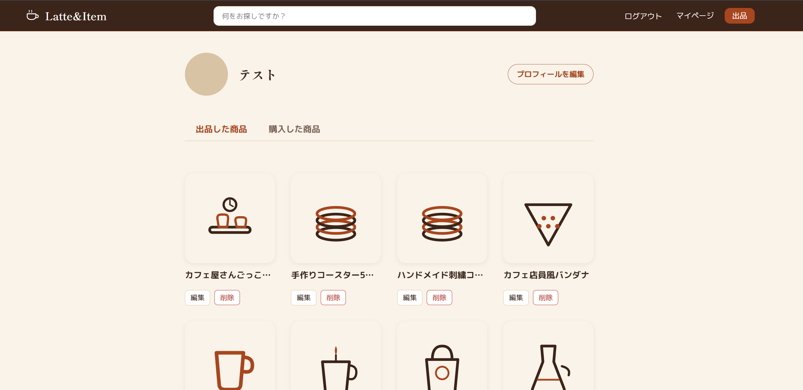

WEB ENGINEER — LEARNING
Kazuyuki Asari
学ぶことを楽しみながら成長中のWebエンジニア志望です。
01
ABOUT
40代から新たな挑戦をしているWebエンジニア志望です。
😀 自己紹介
前職では製造業に携わり、現場の業務に日々向き合ってきました。40代から新たな挑戦としてプログラミング学習を始め、難しさを感じながらも、新しいスキルが身についていく過程を楽しみながら、自分のペースで着実に成長していきたいと考えています。
💡 きっかけ
「ものを作る楽しさ」に惹かれたのがきっかけです。身近に存在するWebサービスを見て「これはどう作られているんだろう」と興味を持ったことから、Webエンジニアを目指すようになりました。
✨ 楽しいと感じること
新しい技術を学び、それを形にしていく過程が何より楽しい。理解できなかったことが少しずつわかるようになり、実際に動くものを作れるようになっていく実感が、学習を続けるモチベーションになっています。
LEARNING
学習期間・学習方法
2025年10月から オンラインスクール「COACHTECH」にて学習を開始
Web開発の基礎から実践までを体系的に学習。
- HTML
- CSS
- TailwindCSS
- PHP
- Laravel
- JavaScript
- React
- TypeScript
- Next.js
- Git/GitHub
- Docker
- MySQL
02
SKILL
これまでの学習を通じて習得した技術です。
言語
-
HTML5/CSS3
-
PHP
-
JavaScript
-
TypeScript
-
TailwindCSS
フレームワーク
-
Laravel
-
React
-
Next.js
インフラ・DB・ツール
-
Git/GitHub
-
Docker
-
MySQL
-
claudeCode
現在主に学習中のもの
-
-
03
PROJECTS
GitHubで公開している個人開発プロジェクトを随時こちらに追加していきます。